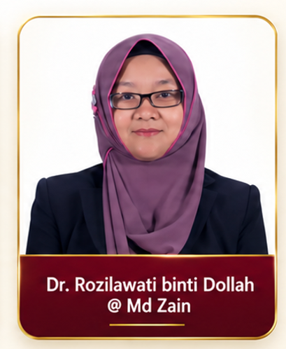
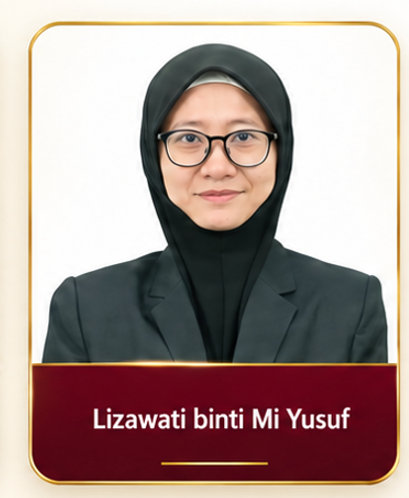
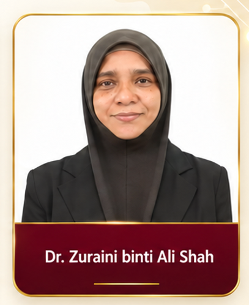
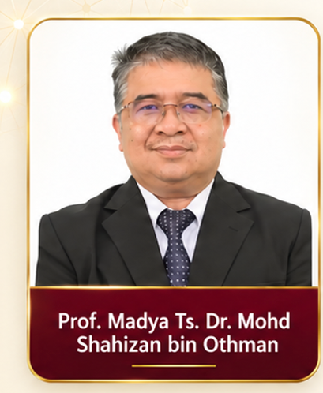

Sesi 1
Dr. Rozilawati binti Dollah @ Md Zain
Penceramah bagi Pengenalan kepada AI dan Generative AI.
Barisan penceramah yang membimbing peserta daripada pemahaman asas AI kepada aplikasi praktikal dalam tugasan sekolah.

Penceramah bagi Pengenalan kepada AI dan Generative AI.

Penceramah bagi Alat AI untuk Produktiviti.

Penceramah bagi AI untuk Pentadbiran dan Automasi Tugasan Pejabat.

Pensyarah, Universiti Teknologi Malaysia · Felo, UTM Big Data Centre
Beliau mengendalikan sesi amali AI untuk pengajaran, pembelajaran, analisis data, visualisasi dan kerja berasaskan sumber.
Lihat kursus pendek lain di GitHub →